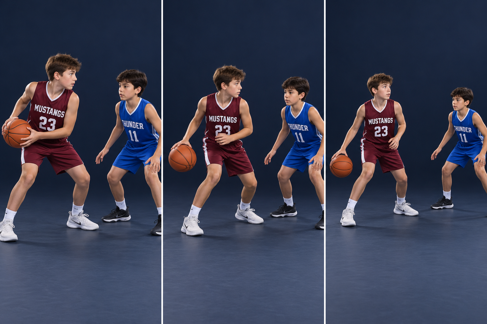

Two situations are shown here. Step 1 is protecting a held ball. Steps 2–3 are a separate live-dribble sequence. If you have already ended your dribble, you must pivot and pass or shoot; you cannot begin a retreat dribble.
PHOTO WALKTHROUGH
Clear stills · one action at a time
3 photo steps

01
Step 1 · Protect a held ball
STEP 01
Protect a held ball
Two hands. Far hip. Body between.
Use a balanced stance and turn your torso to put your shoulder and hip between the defender and the ball. Keep elbows bent and the ball close.
If your dribble is over, maintain your pivot and find a pass. Strong protection is positioning and grip, not a stiff-arm.
Catch this mistake
Swinging elbows, pushing the defender away, or restarting a finished dribble.
02
Step 2 · Keep the dribble outside
STEP 02
Keep the dribble outside
Live-dribble example: shield with the body.
With a live dribble, turn partly sideways and bounce with the outside hand. Keep the ball on the protected side.
Keep the hand on top or the side of the ball as you push it down. The free arm stays bent naturally; it must not extend to push or hold the defender.
Catch this mistake
Scooping under the ball, letting it come to rest, or bouncing it in front of the defender.
03
Step 3 · Retreat and read
STEP 03
Retreat and read
Short backward steps. Eyes stay up.
Take two controlled retreat dribbles into open space, keeping your body between the ball and pressure. Stay balanced and see the court.
Once space opens, square up and choose a pass or a new attack. Check the sideline, baseline, backcourt status, and the team’s spacing before retreating.
Catch this mistake
Backing out blindly toward a boundary, carrying, or retreating across midcourt after frontcourt control.
AI-created photo illustrations for teaching body positions. These are separate stills, not slow-motion game footage. Use the written cues and diagrams for movement direction and rules.
O = offense; X = pressure; B = protected ball. Look behind the retreat path before the rep. Never restart a picked-up dribble.
SHIELD → BACK OUT → LOOK AGAIN
KEEP IT LEGAL
Know the boundary
Do not push with the free arm. A retreat keeps an existing dribble alive; it does not reset a dribble you already picked up or remove backcourt restrictions.
TRY IT AT PRACTICE
Start slow, then add a read
First do 5 protect-and-pivot reps with a passive defender. Reset. Then advance to a cone, take two retreat dribbles, and pass or reattack on a coach’s signal. Repeat using both hands. Gradually add controlled pressure.
Ask yourself
Is my dribble still live, and is the space behind me clear?
Coaching references & teaching notes
These are team teaching adaptations. Sources support the principles; the AI-created illustrations are not official rules diagrams or endorsements. Check your event’s local rules with the coach.